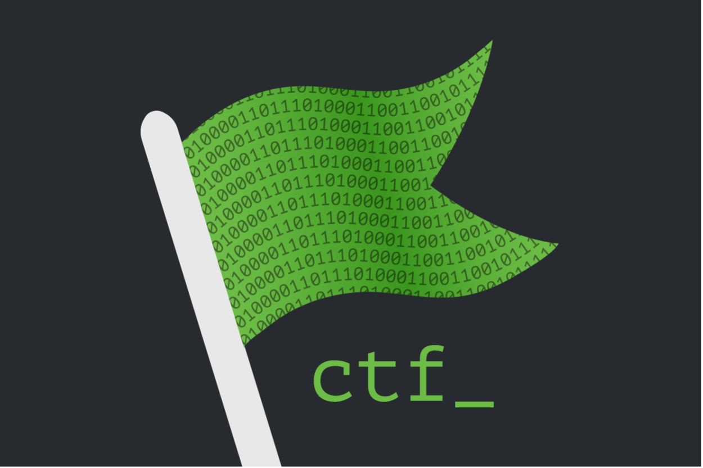

Hello, and welcome to my IT portfolio! I am Jorael Jamison,
a dedicated and committed professional with a deep passion for
technology and innovation. From an early age, I’ve been fascinated
by computers and technology and amazed how rapidly it is evolving and
shaping the way we work and live.
Over the years, I have acquired a solid foundation and skills to help
in my journey as I pursue a career in IT. A recent accomplishment of mine
is graduating with my Bachelor of Science in Cybersecurity – with honors.
This academic achievement follows my attainment of an Associate of Arts
degree – with honors. What sets me apart is my dedication and commitment
to continuous education and determination to achieving goals. In the
ever-evolving landscape of IT, I stay updated on the latest trends and
technologies, ensuring that I can deliver innovative solutions to the
dynamic needs of the industry.
Beyond technical proficiency, I prioritize strong values, integrity,
and the significance of confidentiality. My communication skills are
robust, and I am committed to fostering strong relationships with the
community and stakeholders. With 17 years of combined experience in
loss prevention, management, and corrections, I bring a proven track
record of determination and leadership. Moreover, I excel in analytical
tasks and report writing.
In my portfolio, you’ll find a showcase of some of my proudest
achievements and projects, demonstrating my capabilities and passion for IT.
I’m thrilled about the prospect of contributing my skills and expertise to
your organization and working together to drive innovation, growth, and
success.
Thank you for visiting my portfolio, and I look forward to the possibility
of working together in the future.

Every night the court docket needs to be generated at the jail. This process
can be very time consuming, taking an officer upward 1 to 2 hours in order to complete.
I wrote this program as a proof of concept while obtaining my BAS degree, thinking there must
be a more efficient way to generate the docket. After much trial and error, and utilzing the help and input of
fellow officers, I was able to sucessfully achieve a working program. The python script I wrote for
this program streamlines the process, it takes in the daily jail roster and compares it
to the daily superior and district court dockets. It instantly compiles all the names of
'in custody' inmates who are on the court docket, than prints it in the preferred
format, along with thier housing assignment.
Overall, it has received very positive feedback.
The court officers especially love the program as they utilize it daily to cross-reference the docket. If the docket
was missed the night before, they are able to create the entire thing in less than 10 minutes.
Additionally, as shown in testing, this program is significantly more accurate than manually completing the docket,
as it mitigates human error of excluding a name. I am working on upgrading this script by turning it into a
GUI Interface application. This will further simplify the process. This GUI app is currently in beta stages and has
not been rolled out to the jail.
For my capstone project in cybersecurity, I conducted an
an assessment of smartphone security vulnerabilities. The scope of
this project involved a research-based approach where I investigated
various aspects of smartphone security, including data leaks, weak passwords,
unsecure networks, and malicous applications. Additionally, this project covered
application permissions vulnerabilites, phishing methods, spam identification,
and safe browsing practices. I felt this was an important and relevant topic
with the widespread usage of mobile devices that contain a multitude of personal
and sensitive data, making them lucrative targets to be exploited.

Project managers are an integral part of any business, they take on huge responsibilites
and various roles in order to effectively plan, facilitate, and execute a project.
They are responsible for making important decisions and being a positive example to motivate
their team to success. Additionally, they are responsible for interacting with and building
quality relationships with various stakeholders. Overall, I enjoyed all the valuable concepts
and skills I learned while taking my course in project management, and below are some projects
I worked on.

Below you will find examples of my skills in successfully performing web reconnaissance
of a mock company, and ultimatly obtaining credentials to their application. This was a
series of three Capture the Flag challanges that I completed during my Ethical Hacking and
Cyber Penetration Testing Courses.

Below you will find some programming projects I worked on during my degree.

Other projects I worked on during my cybersecurity degree, including a group project.